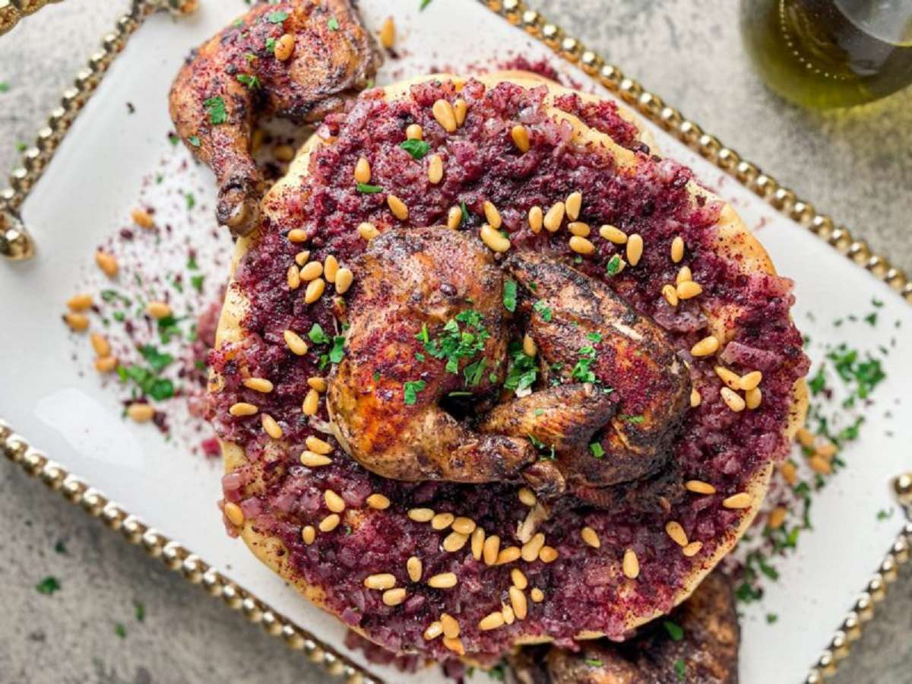
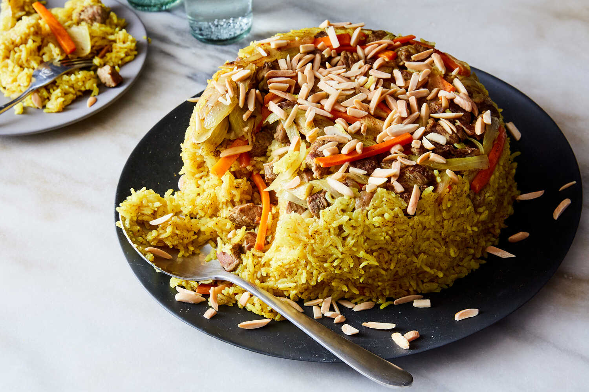
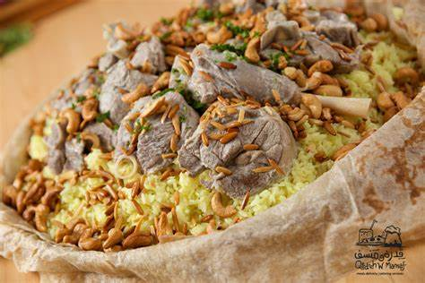
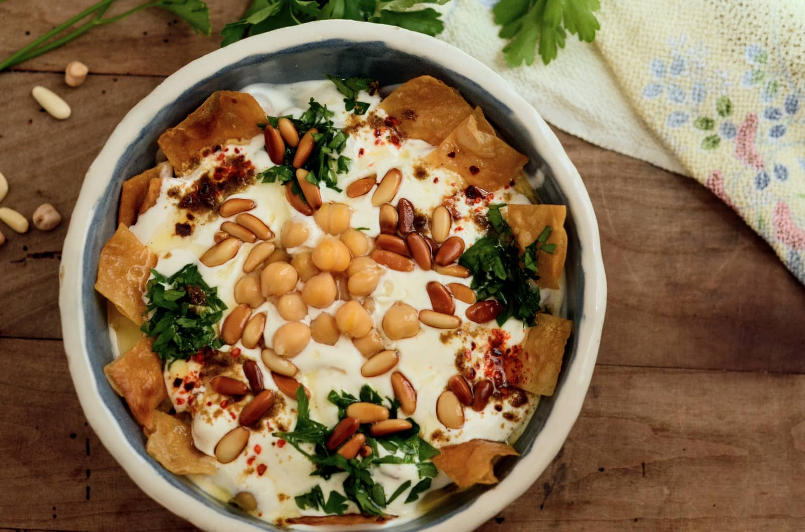
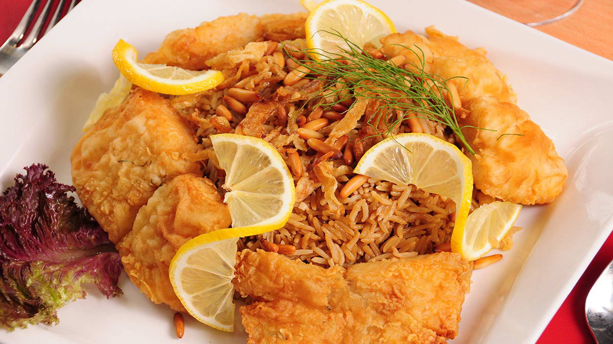
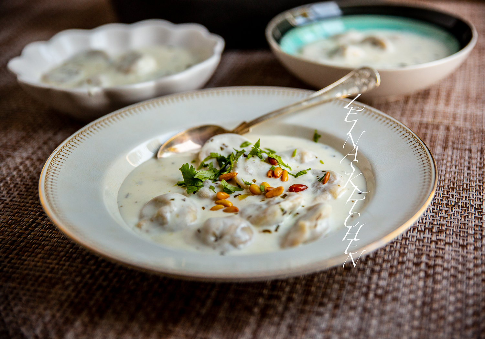
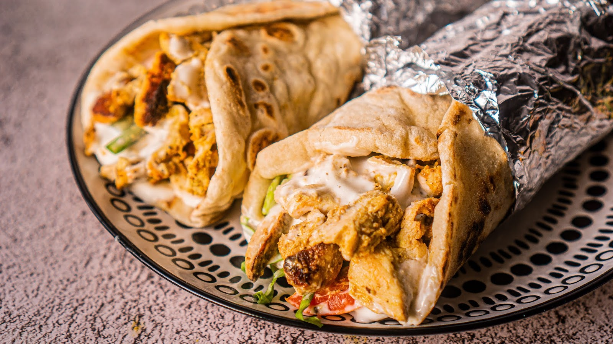
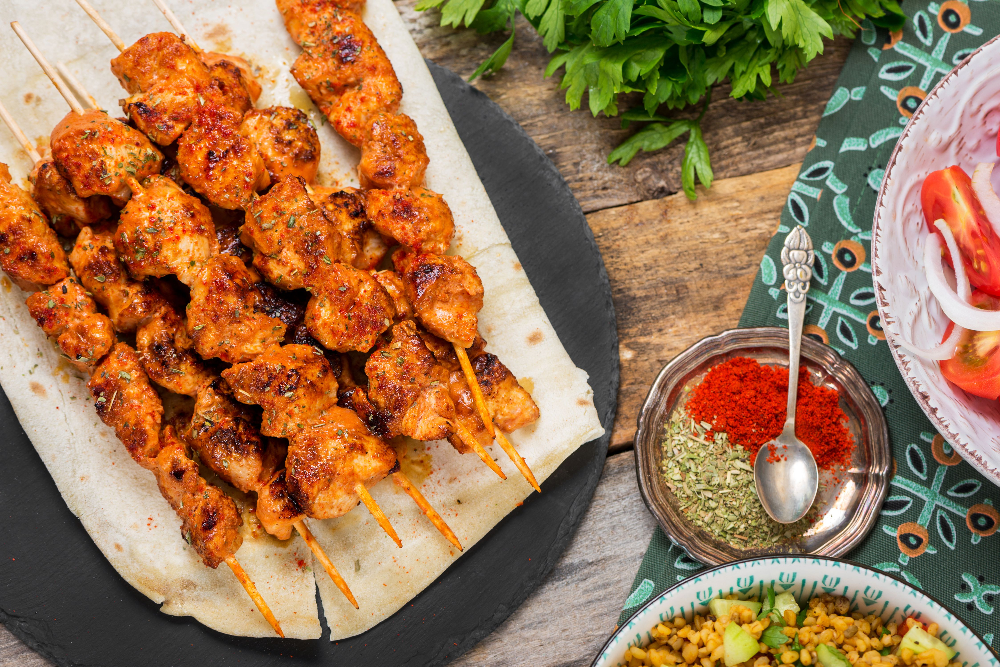
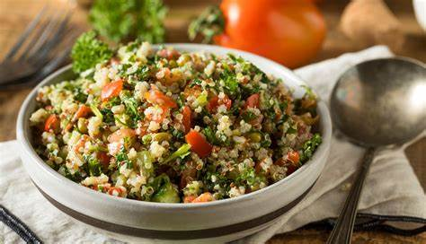
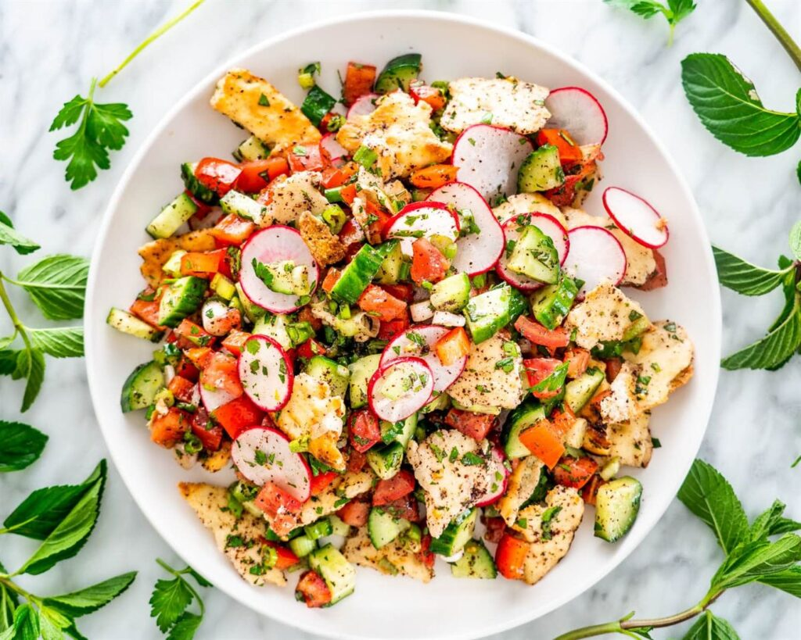

Main Dish
Mussakhan

Roti taboon besar yang di atasnya diberi ayam yang dimasak dengan sumac , bawang merah, dan kacang pinus panggang. Mussakhan adalah salah satu hidangan paling ikonik dari Palestina.
Maqluba

Nasi, daging ( ayam/domba ), dan sayuran seperti terong dan kembang kol yang dimasak bersama dan kemudian dibalik saat disajikan.
Mansaf

Makanan ini adalah lambang dari makanan Palestina, terutama di daerah Tepi Barat. Mansaf terdiri dari daging domba yang dimasak dalam saus yoghurt kering yang difermentasi, dan disajikan dengan nasi atau bulgur.
Fattet Hummus

lapisan roti pita yang direndam dalam kaldu ayam, kemudian ditambahkan Hummus, yogurt, dan kacang pinus panggang.
Sayadiyah

Nasi ikan yang dimasak dengan rempah-rempah seperti kunyit dan bawang, kemudian disajikan di atas nasi yang harum.
Shish Barak

Pangsit daging yang dimasak dalam saus yogurt yang kaya akan rempah dan disajikan dengan roti.
Shawarma

Daging yang dipanggang secara vertikal dan diiris tipis-tipis, kemudian disajikan dengan roti pita dengan berbagai macam sayuran dan saus fahini.
Kebab

Daging yang dipanggang atau dibakar, kemudian bisa disajikan dengan nasi, roti, atau sayuran.
Tabbouleh

Salad yang terbuat dari bulgur, peterseli, mint, tomat, dan bawang, dicampur dengan jus lemon dan minyak zaitun.
Fattoush

Salad yang terbuat dari sayuran segar seperti tomat, mentimun, dan selada, dicampur dengan potongan roti pita yang digoreng atau dipanggang dan diberi saus lemon dan minyak zaitun.